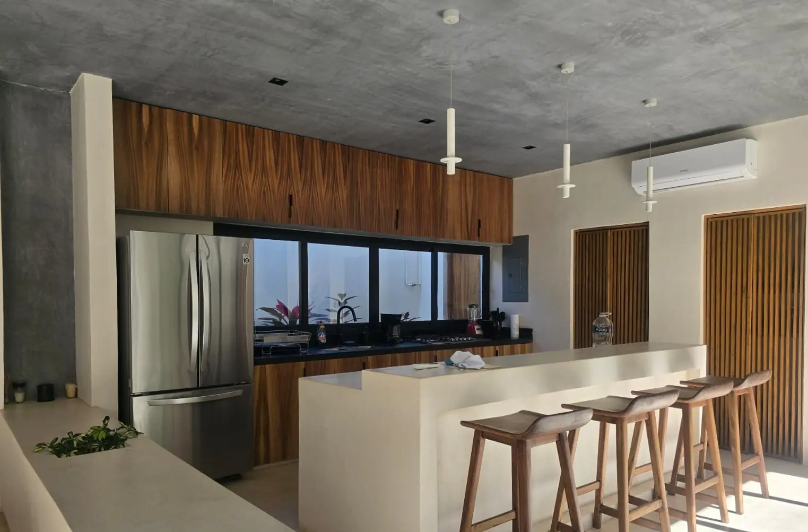

Clósets, puertas, cocinas, muebles y carpintería de obra a medida en Playa del Carmen, fabricados en taller propio con maderas y tableros elegidos para el clima de la costa.

Trabajamos en Playa del Carmen — Playacar, Centro, Ejidal, Corasol, Selvamar y el corredor de la 30 — y el proyecto se ajusta a lo que la plaza impone: el trámite municipal más ágil de la región, de dos a cuatro semanas con expediente completo. Somos constructora con equipo propio, no intermediarios que subcontratan la obra y desaparecen cuando hay que responder.
Levantamiento en sitio sobre muro terminado, proyecto de despiece con la tolerancia real del espacio, fabricación en taller, y montaje con nivelación sobre patas o tacos regulables. Entregamos con puertas y cajones ajustados, no solo colgados: en carpintería el ajuste final es la mitad del trabajo y es lo primero que se nota cuando se omite.
El tzalam y la parota son las maderas duras locales que mejor se comportan: estables, resistentes al insecto y con veta que aguanta el sol filtrado. La caoba funciona en interior fino. Lo que no funciona es el pino sin tratar para nada expuesto a humedad, ni el aglomerado corriente en zona húmeda. Toda madera exterior lleva tratamiento contra termita y sellador con filtro UV, y se renueva el acabado cada dos o tres años: en este clima no existe la madera exterior de cero mantenimiento, y quien la promete está omitiendo algo.
| Trabajo de carpintería | Materiales | Costo 2026 |
|---|---|---|
| Clóset a medida | Melamina 16 mm, canto ABS, herraje estándar | $2,000 MXN – $5,000 MXN |
| Clóset vestidor premium | MDF lacado o chapa, cierre suave, iluminación | $5,000 MXN – $11,000 MXN |
| Puerta interior de tambor | Bastidor con chapa, marco y herraje | $4,000 MXN – $9,000 MXN |
| Puerta sólida de madera dura | Tzalam, parota o caoba, por hoja | $12,000 MXN – $45,000 MXN |
| Cocina integral | Por metro lineal, sin cubierta | $3,000 MXN – $16,000 MXN |
| Mueble a medida (TV, baño, barra) | Según diseño y material, por pieza | $8,000 MXN – $60,000 MXN |
Precios de 2026 para el trabajo entregado y funcionando. Cada partida lleva marca y modelo especificados, que es lo que permite comparar dos presupuestos de verdad en lugar de comparar totales. En las plazas insulares y en Bacalar el traslado se factura aparte y a la vista.
La puerta interior de tambor con chapa cubre la mayoría de la casa a costo razonable y se comporta bien en interior climatizado. La madera sólida tiene sentido en puerta de entrada, en puertas de doble altura y donde se busca aislamiento acústico real. En exterior, la puerta sólida necesita alero o protección: sol directo más lluvia sobre una hoja sin resguardo abre la veta por más buen acabado que lleve.
El proceso es siempre el mismo: levantamiento en sitio, proyecto, presupuesto cerrado por partidas y contrato con calendario ligado a avance. Nada arranca sin que el alcance esté escrito. En Playa del Carmen resolvemos antes los permisos o la autorización de la administración que el trabajo necesite.
Guías útiles: Carpintería a Medida en Tulum · Carpintería a Medida en Puerto Morelos · Carpintería a Medida en Puerto Aventuras · Carpintería y herrería en Playa del Carmen · Clósets a medida · Puertas de madera · Cocinas de madera · Deck de madera · Pérgola de madera
196+ proyectos terminados. Contrato a precio fijo. Respuesta en 2 minutos.
Cotizar por WhatsApp